<!DOCTYPE html>
<html>
   <head>
      <title>Jerzy Sawickie</title>
      <meta charset="UTF-8">
      <meta name="viewport" content="width=device-width, initial-scale=1.0">
      <link href="https://fonts.googleapis.com/css?family=Kurale" rel="stylesheet">        
      <style>
         * {font-family: 'Kurale', serif; margin: 0; padding: 0; position: relative;}
         body { margin: 0; background: url('IMAGE/tloant.jpg'); 
                margin-block-start: 0; margin-block-end: 0;
         }

         .sh-div {width: 800px;height: 3750px; margin-top: 50px;}
         .gr-photo-1 {width: 350px; height: 2500px; float: left;}

         a {color: #FFFACD}
         .im-1 {width: 254px; padding: 50px 5px 0; transition: transform .2s;}
         .im-2 {width: 200px; padding: 20px 5px 0; transition: transform .2s;}
         .img-p, .img-p-1 {width: 310px; padding-bottom: 10px; font-size:14px; 
                           color: #FFE4B5; text-align: center;padding-right: 20px; 
                           padding-left: 20px; background: url('IMAGE/tlo-ant011.jpg'); }
         .img-p {width: 310px;}
         .img-p-1 {width: 200px;}
         .gr-art-1 {width: 450px; height: 3700px; color:#FFFACD; float: right;
                    background: url('IMAGE/tlo-ant011.jpg'); font-size:14px;
                    background-repeat: repeat-y; background-size: 100%; 
                    padding: 20px 0px 0px 0px;}
         .gr-art-1 p {margin-top: 10px; background-color: rgba(16,39,30,0.2); 
                      padding-left: 57px; padding-right: 45px; 
                      text-align: left;line-height: 18px}
         .gr-art-1 .pDD {text-align: center;}
         .gr-art-1 a {color: #FFE4B5;}
         .interval-2 {width: 800px; height: 20px; }
         .gr-ph-title {width: 800px; height: 60px; color:#FFE4B5;background: url('IMAGE/tlo-ant011.jpg'); text-align: center;padding: 75px 0 50px 0;}
         .gr-ph-title span {background-color: rgba(16,39,30,0.4)}
         .interval-1 {width: 130px; height: 50px; }
         .footer-1 {width: 800px;}
         .footer-1 a {color:#FFE4B5; padding-bottom: 30px}
         .im-1:hover, .im-2:hover {-ms-transform: scale(2);
                                   -webkit-transform: scale(2); transform: scale(2); z-index: 9999; }
         </style>
      </head>
      <body>

      <center>

         <div class="sh-div">
         <div class="gr-photo-1">
            <p>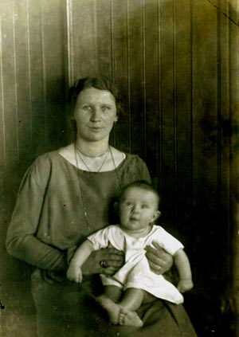</p>
            <p class="img-p-1">Stanisław z mamą Marią.</p>
            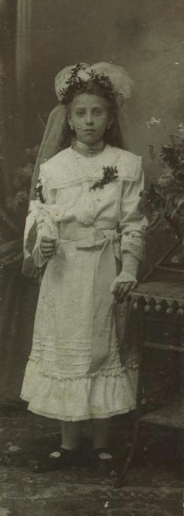 
            <p class="img-p-1">Jadwiga - pierwsza komunia święta.</p>
            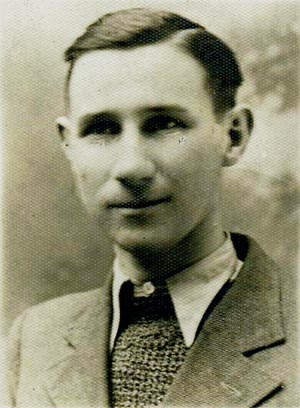 
            <p class="img-p-1">Stanisław w młodości.</p>
                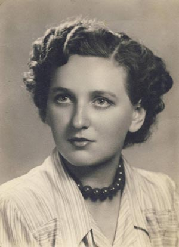 				
            <p class="img-p-1">Jadwiga.</p>
            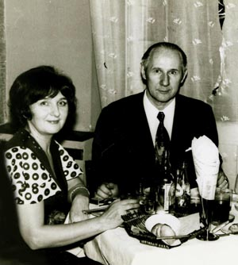 				
            <p class="img-p-1">Jadwiga i Stanisław.</p>
            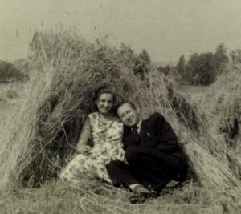 				
            <p class="img-p-1">Jadwiga i Stanisław.</p>
             				
            <p class="img-p-1">Stanisław z córeczką Marią.</p>
            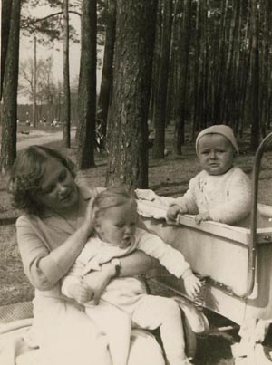 				
            <p class="img-p-1">Jadwiga z córeczką Marią i synem Wojciechem.</p>

         </div>
         <div class="gr-art-1">
            <p><b> Stanisław Sawicki</b> urodził się 05.05 1924 roku w Siedliskach koło Nakła. Tam właśnie jego ojciec, Antoni, pracował jako gorzelnik we dworze. W latach 40. ukończył gimnazjum w Kielcach, a następnie Techniczne Zakłady Naukowe w Katowicach. Przez całe życie był geodetą, co wiązało się z nieustającymi peregrynacjami. Na Ziemiach Odzyskanych, gdzie zapewne też coś obmierzał, poznał swoją przyszłą żonę, Jadwigę.</p>
            <p class="pDD">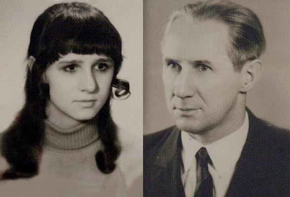 				
            <p class="img-p-1">Jadwiga i Stanisław.</p>
            <p>Jawiga odznaczała się wielką urodą, urokiem osobistym i kobiecością. Stanisław w genach mił skłonność do urodziwych niewiast, nie przepuścił zatem takiej okazji. Oświadczył się Jadwidze, został przyjęty i wkrótce odbył się ślub.</p>
            <p class="pDD">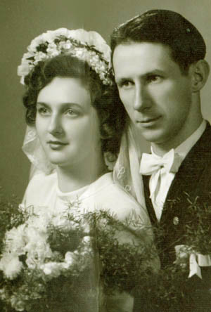 
               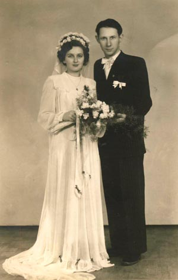<br><br></p> 

            <p> Trudno powiedzieć, na ile dla młodej żony tułaczka geodety była atrakcyjna. Miłość Stanisława do młodziutkiej i slicznej żony była tak wielka, że poniechał życia nomada i osiadł w Kielcach.<p>Tam państwo Sawiccy urządzili się w tak zwanym bloku, gdzie w spokoju i dostatku wychowywali swoje dzieci.<p>Stanisław odziedziczył tę część genów Sawickich, jaka za nic w świecie nie dopuszczał do grzebania w ziemi. W przeciwieństwie do swej uroczej żony, jaka kochała tak zwaną działkę i pracowała na niej aż do późnej starości, Stanisław w tym czasie oddawał się wypoczynkowi. Dołączył tym samym do pozostałych swych bliskich krewnych. Jego siostra stryjeczna, Kamila, także nie znosiła ziemi.<p>Jadwigą Kobak, żona Stanisława, pochodziła z niezwykle ciekawej rodziny, jakiej barwne i dramatyczne losy oczekują na swój szczegółowy opis. Tu w skrócie przypomnimy, iż Jadzia, jako dziewczynka, została wysłana do Niemiec, gdzie przez rok chodziła do niemieckojęzycznej ochronki. Tam właśnie przygotowywano ją do adopcji przez niemiecką rodzinę. Ale rodzice zrobili wszystko, by ją i jej siostrę odnaleźć w Niemczech. Udało się.</p> <p>Jakiś czas rodzina mieszkała w Środzie Śląskiej, gdzie także wzięła ślub. Zachowała się niezwykła Książeczka  Stanu Cywilnego</p>
            <p class="pDD">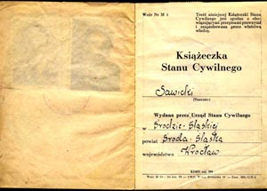 
               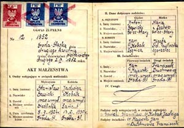 </p>
            <p> Stanisław był człowiekiem atywnym, nie tylko w czasie wojny. Za swoje bohaterskie czyny został wielokrotnie odznaczony. Był kombatantem.</p>
            <p class="pDD"> </p>
            <p class="pDD">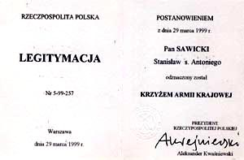 </p>
            <p class="pDD">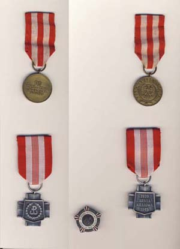<br> </p>
            <p>W staryszm wieku oddawał się swojej pasji: był miłośnikiem filatelistyki.</p>
            <p class="pDD">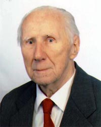</p>
            <p>Zmarł 19.03.2011 roku z Kielach. Pochowany w Cedzynie. </p>
         </div> 
      </div>
      <div class="interval-2">
      </div>
      <div class="gr-ph-title"><span>Jerzy i Zofia mieli dwoje dzieci:<br>
            <a href="Melunia.html"> Marię</a> i <a href="Wojciech.html"> Wojciecha</a>
         </span>
      </div>
      <div class="footer-1">
         <a href="Antoni-Senior-Sawicki.html"> Wróć do poprzedniej strony</a>
      </div>
   </center>
</body>
</html>
